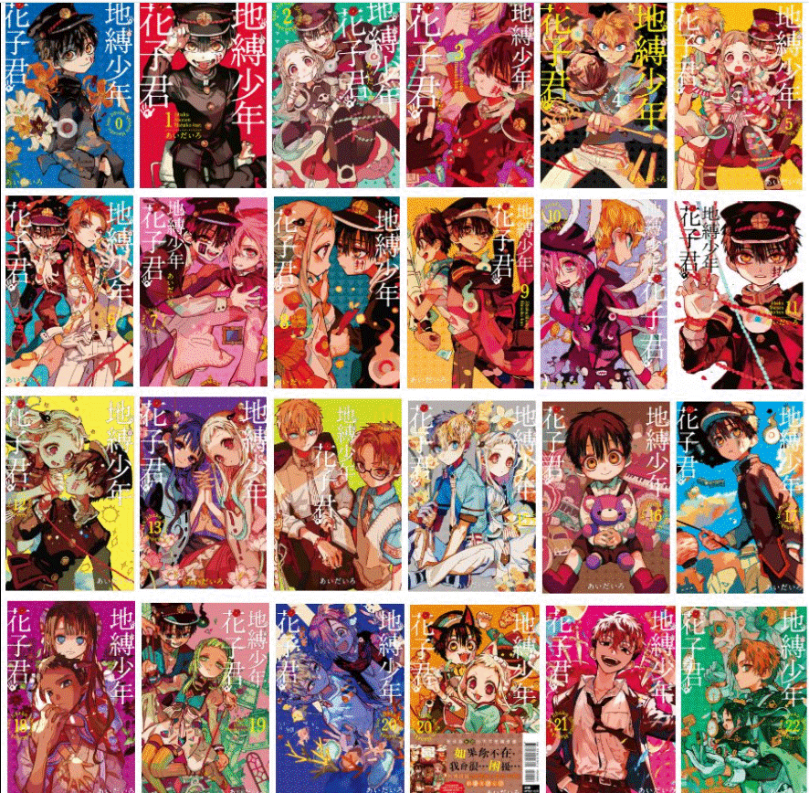

在海鷗學園，少女八尋寧寧為了實現自己的願望，依照學園傳說前往舊校舍三樓的女生廁所，召喚出傳說中的「花子小姐」。 然而，她召喚出來的卻是一位名叫「花子君」的男孩幽靈。 從此，寧寧被捲入了與海鷗學園「七大不可思議」相關的種種事件中，展開了一段與花子君在校園怪談中冒險的搞笑故事。
海鷗學園七大不可思議之七，常駐舊校舍女廁。 身穿黑色學生制服，左臉有「封」字符咒的幽靈少年。 性格外向但內心孤獨，會用惡作劇掩飾內心的負罪感。 能實現生者的願望，但與此同時許願者也需付出相等的代價來交換。
海鷗學園高等部一年級生，因「蘿蔔腿」而自卑。 為了告白成功召喚花子君，意外獲得與怪異結緣的力量，後與花子君結下契約。
海鷗學園中等部三年級生，是知名驅魔師源家的後代。 擁有強大的驅魔能力，起初視花子君為敵，後來逐漸改觀。 擅長家務與料理。
花子君的雙胞胎弟弟，是海鷗學園的怪異之一。 性格腹黑，力量強大，是故事中的重要反派。 身穿古風校服，右臉有「封」字符咒。與花子君相異的是其負責實現"死者"的願望。
海鷗學園高等部三年級生，所屬廣播部。來歷神秘的少女。 與柚木司結緣，並遵從他的指令傳播被篡改的傳言，因而加劇了學園怪異的危險性。
海鷗學園高等部二年級生、學生會會長，也是知名驅魔世家「源家」的後代。 身為天才除妖師的他，擁有靈刀和數珠等除魔道具，同時也以其開朗陽光的形象聞名。
地縛少年花子君這個動漫作品為漫畫改編而成，其漫畫版面品質尤其精緻，作者細緻刻劃每處細節，人物的表情也生動且豐富，並且有著獨樹一職的繪畫風格。在此將會展示漫畫封面。
